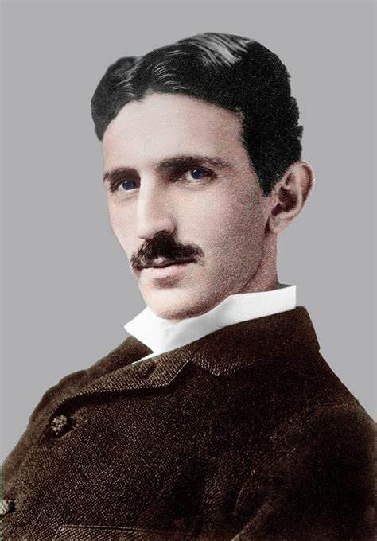

Biography
Nikola Tesla (Serbian Cyrillic: Никола Тесла) was a Serbian-American inventor, electrical engineer, mechanical engineer, and futurist. Born on July 10, 1856 in Smiljan (which was part of the Austrian Empire and is now in Croatia), Tesla made significant contributions to the design of the modern alternating current (AC) electricity supply system.
Inventions
- AC (Alternating Current) power system
- Tesla coil
- Radio
- Wireless communication
- Remote control
- Induction Motor
- Wardenclyffe Tower
- Rotating Magnetic Field

Legacy
Nikola Tesla's work continues to inspire scientists, engineers, and futurists worldwide. His vision of a world powered by electricity and interconnected communication systems has profoundly shaped our modern civilization. 🌟⚡